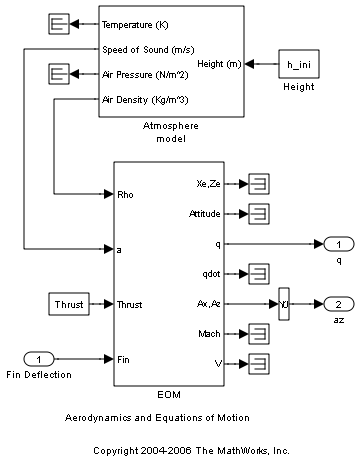
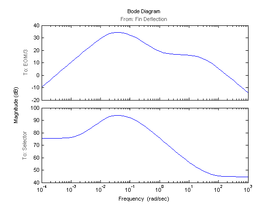

Trimming and Linearizing an Airframe
Contents
In this example, we need to find the elevator deflection and the resulting trimmed body rate (q) that will generate a given incidence value when the airframe is traveling at a set speed. Once we find the trim condition, we can derive a linear model for the dynamics of the states around the trim condition.
Fixed parameters :
Incidence (Theta)
Body attitude (U)
Position
Trimmed steady state parameters :
Elevator deflection (w)
Body rate (q)The model can be opened using the scdairframe command
scdairframe
Generating Operating Points
To get the operating point specification object, you use the operspec command:
opspec = operspec('scdairframe')
Operating Specification for the Model scdairframe.
(Time-Varying Components Evaluated at time t=0)
States:
----------
(1.) scdairframe/EOM/ Equations of Motion (Body Axes)/Position
spec: dx = 0, initial guess: 0
spec: dx = 0, initial guess: -3.05e+003
(2.) scdairframe/EOM/ Equations of Motion (Body Axes)/Theta
spec: dx = 0, initial guess: 0
(3.) scdairframe/EOM/ Equations of Motion (Body Axes)/U,w
spec: dx = 0, initial guess: 984
spec: dx = 0, initial guess: 0
(4.) scdairframe/EOM/ Equations of Motion (Body Axes)/q
spec: dx = 0, initial guess: 0
Inputs:
----------
(1.) scdairframe/Fin Deflection
initial guess: 0
Outputs:
----------
(1.) scdairframe/q
spec: none
(2.) scdairframe/az
spec: none
First, we set the Position state specifications, which are known but not at steady state:
opspec.States(1).Known = [1;1]; opspec.States(1).SteadyState = [0;0];
The second state specification is Theta which is known but not at steady state:
opspec.States(2).Known = 1; opspec.States(2).SteadyState = 0;
The third state specification includes the body axis angular rates where the variable w is at steady state:
opspec.States(3).Known = [1 1]; opspec.States(3).SteadyState = [0 1];
Next, we search for the operating point that meets this specification
op = findop('scdairframe',opspec);
Operating Point Search Report:
---------------------------------
Operating Report for the Model scdairframe.
(Time-Varying Components Evaluated at time t=0)
Operating point specifications were successfully met.
States:
----------
(1.) scdairframe/EOM/ Equations of Motion (Body Axes)/Position
x: 0 dx: 984
x: -3.05e+003 dx: 0
(2.) scdairframe/EOM/ Equations of Motion (Body Axes)/Theta
x: 0 dx: -0.00972
(3.) scdairframe/EOM/ Equations of Motion (Body Axes)/U,w
x: 984 dx: 22.7
x: 0 dx: -1.44e-011 (0)
(4.) scdairframe/EOM/ Equations of Motion (Body Axes)/q
x: -0.00972 dx: 6.31e-016 (0)
Inputs:
----------
(1.) scdairframe/Fin Deflection
u: 0.00142 [-Inf Inf]
Outputs:
----------
(1.) scdairframe/q
y: -0.00972 [-Inf Inf]
(2.) scdairframe/az
y: -0.242 [-Inf Inf]
Linearizing the Model
The operating points are now ready for linearization. First, we specify the input and output points using the following commands:
io(1) = linio('scdairframe/Fin Deflection',1,'in'); io(2) = linio('scdairframe/EOM',3,'out'); io(3) = linio('scdairframe/Selector',1,'out');
Linearize the model and plot the Bode magnitude response for each condition.
sys = linearize('scdairframe',op,io); bodemag(sys) bdclose('scdairframe')